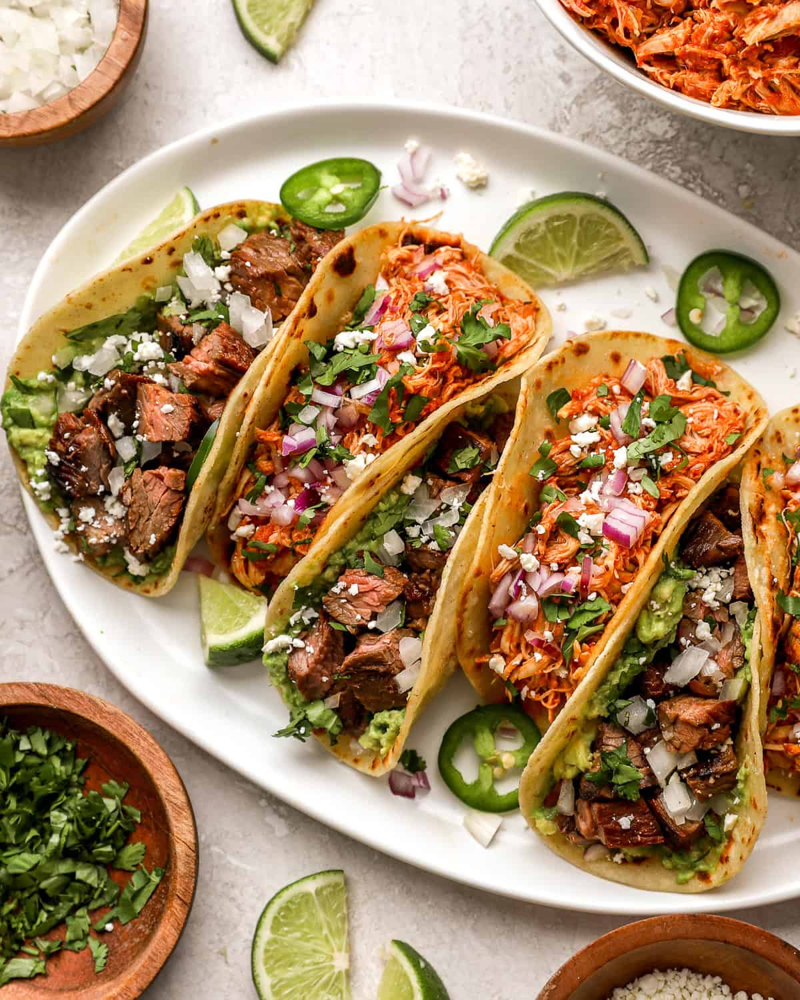

Taco Recipe

About Tacos
Tacos are a great mexican dish that can be dressed up or down.
Ingredients
- 1 lb ground beef
- 1 packet taco seasoning
- 8 taco shells
- 1 cup shredded lettuce
- 1 cup diced tomatoes
- 1 cup shredded cheese
- 1/2 cup sour cream
Instructions
- Cook Gound beef in skillet
- Add taco seasoning and water, simmer for 5 minutes
- Warm taco shells in oven
- Fill taco shells with beef mixture
- Top with lettuce, tomatoes, cheese, and sour cream
- Serve and enjoy!
Back to Recipes